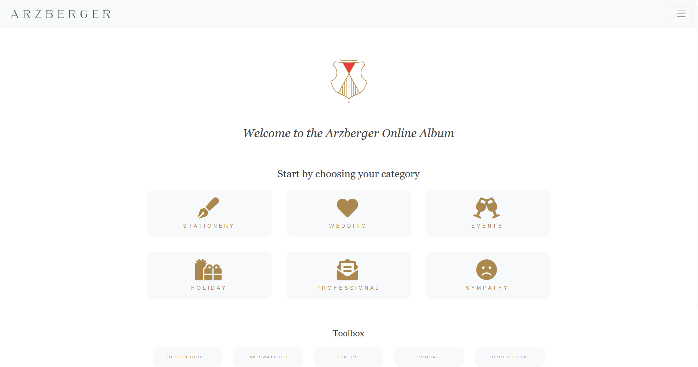
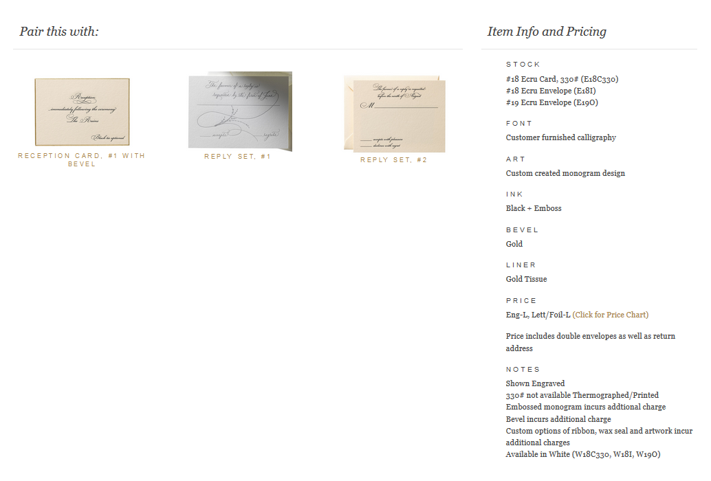
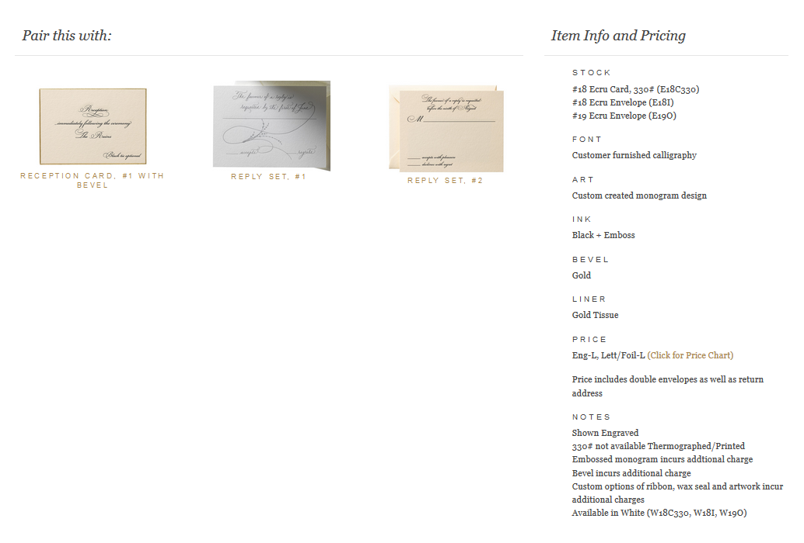

Arzberger
Development of online catalog
Arzberger has been handcrafting custom stationery for nearly 100 years. In an effort to modernize the interface through which they offer this product, I concepted, designed and built an online catalog showcasing the categories, products, and information needed to place orders. Ease of use was key on this, as the clientele varies widely in age, and many users are not computer savvy. The eventual goal with this project is developing an online ordering portal.

 
